In this section we will begin to represent logic diagrammatically with gates. This will allow us to build circuits that perform complex logical operations.
Subsection1.4.1The Basic Gates
There are seven basic gates available in Logisim Evolution. They are the AND, NAND, OR, NOR, XOR, XNOR, and NOT gates, pictured in Figure 1.4.1–1.4.7.
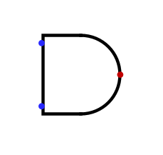Figure1.4.1.The AND gate.
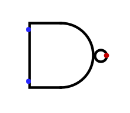Figure1.4.2.The NAND gate.
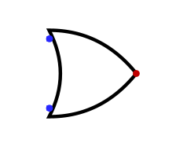Figure1.4.3.The OR gate.
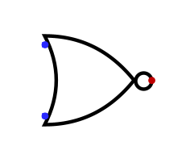Figure1.4.4.The NOR gate.
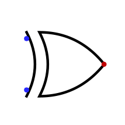Figure1.4.5.The XOR gate.
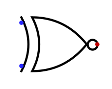Figure1.4.6.The XNOR gate.
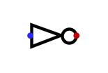
Figure1.4.7.The NOT gate.
There is only one rule of using these gates. All gate inputs must be connected. The possible values to which they can be connected are the logic values 0 and 1. The output of a gate is determined by its operator applied to its inputs.
In a physical circuit, the logic value \(0\) is usually represented by a low voltage like \(0\) volts and the logic value \(1\) is usually represented by a higher voltage like \(5\) volts. In Logisim Evolution, the logic value \(0\) is represented by dark green and the logic value \(1\) is represented by light green.
Open Logisim Evolution. You should see a window with a blank canvas.
(a)
The quick panel above the canvas contains the basic gates. Click the AND gate, let go, and mouse onto the canvas. You should see a gate with two inputs and one output. You can put it anywhere on the canvas. You can also move it around later, although that may goof up any wiring you have added.
(b)
Add an XOR gate to the canvas. You should see a gate with two inputs and one output. Put it below and to the right of your AND gate.
(c)
If you click the output of the AND gate, you will see a wire attached to your mouse. If you move your mouse to the input of the XOR gate, you will see the wire attached to the input. You can only add one right-angle turn per click. If you click, the wire will stay where it is. Click the free end of the wire to continue the wiring path to an input of the XOR gate.
(d)
Use the arrow (selection tool) and the delete key to delete the wire you just added.
(e)
In the left panel, open the Wiring folder and add two Pins. Connect each Pin to one of the inputs of the AND gate. Branch off these connections so that each Pin is also connected to the XOR gate.
(f)
In the Input/Output folder, add two LEDS. Connect one to the output of the AND gate, and the other to the output of the XOR gate. As connections are completed, the red error wires should turn dark green. The inputs are set to 0 at first, and this value is represented by dark green. The outputs should be dark green as well.
When you are done, the circuit should look like this.
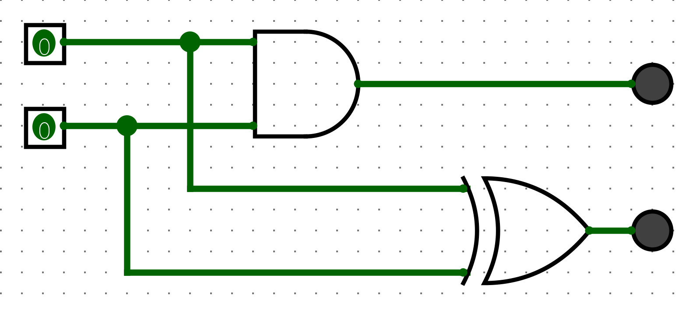
Figure1.4.8.The completed circuit.
Activity1.4.3.
Now you will add some labels. Labels are used to name inputs and outputs, as well as gates.
(a)
Double-click an input and label it x. Label the other input y.
(b)
Double-click the AND gate and label it AND1. Label the XOR gate XOR1.
(c)
Double-click the output of the AND gate and label it s. Label the output of the XOR gate c.
When you are done, the circuit should look like this.
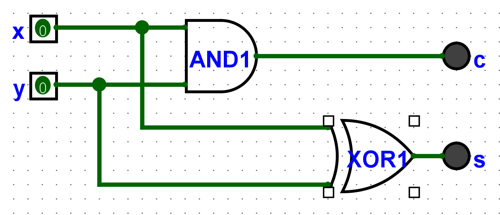
Figure1.4.9.The completed circuit with labels.
Activity1.4.4.
Use the Poke tool in the quick panel (the hand icon) to “poke” the inputs. Click the x input. It should turn light green. Click the y input. It should turn light green. As you play with the inputs, observe that the wires change color to reflect the logic value they carry.
Make a truth table with four columns for \(x\text{,}\)\(y\text{,}\)\(s\text{,}\) and \(c\text{.}\) The first two columns should have the values \(0\) and \(1\) in alternating order, as we have seen in class. Use the Poke tool to determine the values of \(s\) and \(c\) for each combination of \(x\) and \(y\text{.}\) Record your results in the table.
Table1.4.10.Truth table for the circuit.
x
y
s
c
0
0
0
1
1
0
1
1
This circuit is called a half adder. The \(s\) output (for “sum”) is the sum of the inputs (remember, the sum of 1-bit values is also a 1-bit value). Because \(1 + 1 = 0\) in 1-bit arithmetic, the \(s\) output is the XOR of the inputs. The \(c\) output (for “carry”) is called the carry bit. It is \(1\) if the addition overflows, which is only the case when both inputs are \(1\text{.}\) Thus, the \(c\) output is the AND of the inputs.
Activity1.4.5.
Select your entire circuit using the selection tool (arrow icon). Copy and paste it. You should see a copy of your circuit appear on the canvas. Move it below and a little to the right of the original circuit. Change the labels of the new gates to AND2 and XOR2.
Use the tools in the quick panel to construct this circuit.
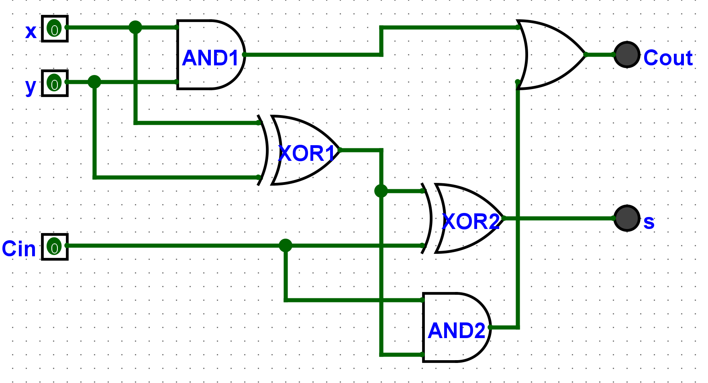
Figure1.4.11.The completed circuit.
Activity1.4.6.
Make a truth table for the circuit. The first three columns should be \(x\text{,}\)\(y\text{,}\) and \(C_{in}\text{.}\) The last two columns should be \(s\) and \(C_{out}\text{.}\) Use the Poke tool to determine the values of \(s\) and \(C_{out}\) for each combination of \(x\text{,}\)\(y\text{,}\) and \(C_{in}\text{.}\) Record your results in the table.
Activity1.4.7.
Thinking about the truth table, explain why this circuit is called a full adder.
Answer.
The full adder (made of two half adders plus an OR gate) actually adds 3 bits. The \(C_{in}\) input is the carry bit from the previous addition. The \(C_{out}\) output is the carry bit for the next addition. The \(s\) output is the (1-bit) sum of the three bits.
Activity1.4.8.
Use the Project...Add Circuit menu item to add a subcircuit to your project. Name it Adder1Bit. Select your entire full adder circuit and cut it from the Main circuit. Double-click the name Adder1Bit in the left pane to open the subcircuit. Paste the full adder circuit into the newly opened blank canvas. At this point it is probably a good idea to save your project. Call it adder.circ.
For your subcircuit to work properly, we need to remove the LED indicators and replace them with real outputs. You can use Pins for this purpose. You will need to alter their attributes in the left pane, so that they are output pins instead of input pins. Alternatively, you can use the quick panel to add outputs. Both input and output pins are represented on the quick panel. When you are done, the subcircuit should look like Figure 1.4.12 below.
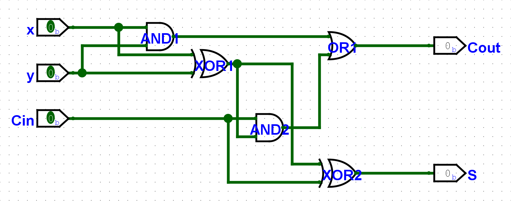
Figure1.4.12.The full adder as a subcircuit.
Activity1.4.9.
If you return to the Main circuit, you should see that the canvas is blank again (if you followed the directions above). Click the Adder1Bit subcircuit in the left pane. You should be able to add a block diagram for the full adder to the canvas. That is, it has inputs on the left and outputs on the right, but the gates are not visible.
Use the Poke tool to test the subcircuit. You should see that it works just like the full adder circuit you built earlier, as indicated in Figure 1.4.13.
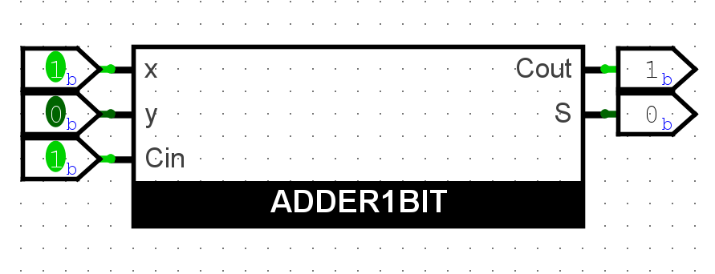
Figure1.4.13.The full adder as a subcircuit.
Activity1.4.10.
Use more subcircuits to build a 4-bit adder. You will need four Adder1Bit subcircuits. You will also need to add a Pin for each input and output. Label the inputs \(x_0\text{,}\)\(x_1\text{,}\)\(x_2\text{,}\) and \(x_3\text{.}\) Label the outputs \(s_0\text{,}\)\(s_1\text{,}\)\(s_2\text{,}\) and \(s_3\text{.}\) Wire the carry-in input of the 0th adder to a constant 0, and wire the carry-out output of the last adder to an LED.
To finish the 4-bit adder, connect the carry-out output of each adder to the carry-in input of the next adder. This is called a ripple carry adder. When you are done, the circuit should look like this.